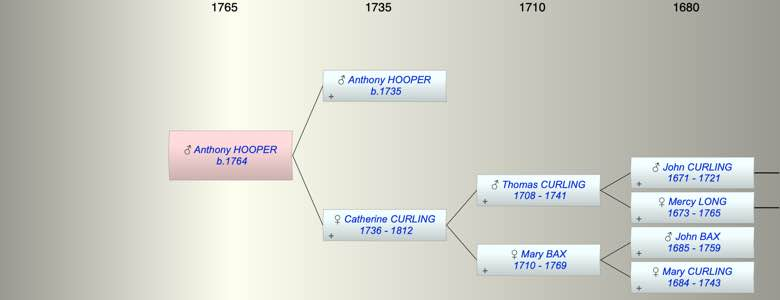

| [Index] |
| Anthony HOOPER (1764 - ) |
|  |
| b. 1764 at St Laurence |
| Parents: |
| Anthony HOOPER (1735 - ) |
| Catherine CURLING (1736 - 1812) |
| Siblings (2): |
| Mary HOOPER (1763 - 1800) |
| Thomas Abbott HOOPER (1765 - 1829) |
| Events in Anthony HOOPER (1764 - )'s life | |||||
| Date | Age | Event | Place | Notes | Src |
| 1764 | Anthony HOOPER was born | St Laurence | Note 1 | ||
| 19 May 1812 | 48 | Death of mother Catherine CURLING (aged 76) | St Laurence | aged 76 ex MIs | |
| Note 1: bap St Laurence 10 Jun 1764 sin if Anthonny and Catherine ex FMO PR |
| Created on a Mac™ using iFamily for Mac™ on 8 Oct 2023 |